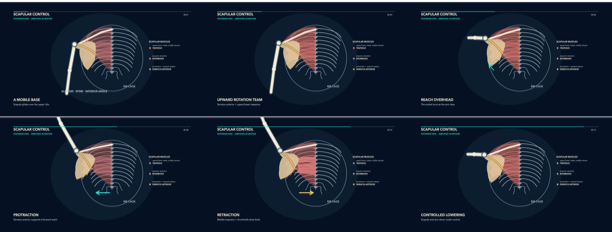

EME6208 · Project 5
Scapular Control
A short 2D animation showing how the scapula and its muscles support controlled arm movement.
Production notes
Visual approach
For building the visuals, the process was mostly AI assisted. Though the audio was added by hand, and lined up manually, with the actual audio clips being generated by huggingface.co. I also added the final captions by hand, as ChatGPT kept wanting to make them just blink in and out of existence.
As far as directing the AI, it was a struggle. I pasted the prompt I used below this section, and ChatGPT just did not want to listen to my directions; I had to tell it to move the actual pieces of the diagrams multiple times before I got anything beyond a static image that has less transparency on whatever muscle is being discussed. It was absolutely bizarre. I’ve never had an issue like this before. Eventually, the LLM decided to forgo the consistent visuals entirely, presenting a realistic but anatomically inaccurate musculoskeletal system, with the simple scapula shape used in the final version of the clip overlaid on top. I was eventually able to steer ChatGPT back on track by being incessant about pointing out the gaps between what was asked for and what was received. This even happened with the labels, as it initially just wanted to list each bone at the side in a small box. I told it to make the labels accurately point to the bone or muscle in each part of the movement.
Prompt
The direction given to the AI
“I need to create a 2D animation that's under 15 seconds in length. I want to focus on scapular anatomy. Ensure scientific accuracy by using only peer-reviewed, trustworthy resources. Create a full script and a visual storyboard alongside the animation. After we generate the visuals I will be importing the clip to capcut for the audio. take steps to ensure the audio is easy to match up to the video. Script and animation should be informative, focusing on the muscles that give you the ability to move your scapula, and what motions require scapular control. Emphasize the importance of these structures. Include labels for each bone and muscle. Color code Muscles. Ensure accuracy of ribcage model, use simple shapes for different bodies, but keep them similar to the silhouette of the actual muscles for fidelity.”
When it came to the script, scientific accuracy notes, source review and storyboard however, ChatGPT got everything on the first try. With even timestamps provided to help me line up audio, telling me how long each audio clip should be to match up exactly to the visual.
Narration script and timing
Scapular Control voiceover
Set the animation’s first frame to 00:00.000. Align the start of each line to the listed time. Each visual beat is 2.4 seconds. Clips taken individually from huggingface.co then combined in CapCut, aligned to the clips.
- The scapula glides across the rib cage.
- Serratus and trapezius turn it upward.
- As your arm lifts, the socket turns up.
- Serratus draws it forward for a reach.
- Rhomboids and middle trapezius draw it back.
- Together, they guide the arm and steady force.
Visual storyboard
Six movement beats

- 0.0–2.4 seconds — A moving base. Show the enlarged posterior shoulder-girdle diagram at rest. Identify the glenoid, scapular spine, inferior angle, and rib cage; include the paired rib arcs and muscle layers.
- 2.4–4.8 seconds — Muscles share the work. Show serratus anterior and upper/lower trapezius attached to the moving scapula; the upper and lower trapezius muscle forms and serratus anterior deform with the scapula during upward rotation.
- 4.8–7.2 seconds — Reach overhead. Rotate the scapula upward while the humerus rises from the glenoid; the inferior angle moves laterally. Normal arm elevation also includes posterior tilt, which this simplified view does not show.
- 7.2–9.6 seconds — Reach forward. Animate lateral scapular translation around the thorax; shorten the serratus anterior muscle shape and lengthen the rhomboid muscle bellies as the scapula protracts.
- 9.6–12.0 seconds — Pull / row. Animate scapular translation back toward the spine; shorten the middle trapezius and rhomboid muscle bellies, and lengthen the serratus anterior muscle shape during retraction.
- 12.0–14.4 seconds — Control the return. Lower the arm and reverse the scapula’s upward rotation under control. Close on the scapula’s role in orienting the glenoid and transferring force.
Accuracy and limits
Scientific accuracy notes
The posterior rib cage drawing shows the usual pattern of twelve pairs articulating with T1–T12; ribs 11 and 12 are shorter floating ribs, and the sternum and costal cartilages are omitted from this posterior view (de Farias et al., 2020).
Scapular motion is three-dimensional and coupled with clavicular and humeral motion. During arm elevation, upward rotation and posterior tilt are characteristic; individual kinematics vary, so the animation does not present a fixed scapulohumeral ratio as universal (de Sanctis et al., 2023; Ludewig & Reynolds, 2009).
The upper and lower trapezius work with serratus anterior during upward rotation. Serratus anterior also contributes to protraction and helps keep the scapula closely related to the thorax. Middle trapezius and rhomboids contribute to retraction and medial stabilization (Paine & Voight, 2013; Phadke et al., 2009).
The scapula provides a mobile base for the arm. Coordinated scapular muscles help orient the glenoid as the arm moves and support force transfer between the arm and trunk (Elder & Powers, 2025; Paine & Voight, 2013). The animation is a simplified 2D posterior projection: it shows key relative motions but does not depict every 3D component, including posterior tilt. The broad muscle contours track changing origin-to-insertion spacing to illustrate shortening and lengthening; they do not measure fascicle strain, pennation, or force. Its scapula-to-humerus timing is illustrative and does not claim a fixed scapulohumeral ratio. Other contributors include levator scapulae, which can elevate and downwardly rotate the scapula, and pectoralis minor, which can contribute to protraction and anterior tilt. This short video is an overview, not a complete catalog of every muscle action.
Workflow reflection · November 12, 2026
Blender and GenAI
Analyzing the strengths and weaknesses of both workflows.
Traditionally, digital animation has required a considerable degree of technical knowledge, with skills such as modeling, drawing, rigging, and animating necessary for developing digital content. These processes have typically demanded significant time and effort. However, with the advent of Generative Artificial Intelligence (GenAI) over the past several years, the barrier between animation production and the technical knowledge required to create it has shrunk significantly. Despite these advancements, substantial differences remain between traditional and automated workflows, presenting trade-offs that, depending on the user and intended output, become difficult to ignore. Both approaches offer distinct strengths and weaknesses, creating an opportunity to examine their respective capabilities and limitations. Ultimately, the choice between traditional and AI-driven animation development depends on the balance between creative control, technical expertise, and production efficiency.
The king of open-source software, Blender, represents a traditional approach to 3D animation, modeling, and rigging. With Blender, users maintain full control over nearly every aspect of the production process, allowing for precise manipulation of objects, characters, and environments. This level of control provides significant creative freedom, particularly when developing highly specific or complex animations. However, this flexibility comes at the cost of a steep learning curve, requiring technical skills that can take considerable time and practice to develop.
In stark contrast to Blender's traditional, hands-on approach, GenAI has introduced increasingly automated avenues for digital content creation, allowing users to both direct and generate desired outcomes through text prompts and images. These tools significantly reduce the technical barriers associated with animation development and can accelerate the production process. However, this convenience comes with its own limitations. GenAI platforms generally offer less granular control over the final output than traditional animation software, often making it difficult to correct specific issues without regenerating portions of the content. As a result, users may find themselves sacrificing precision and consistency in exchange for accessibility and efficiency.
When it comes to traditional animation versus GenAI, the idea of what an animator truly is begins to get muddy. Historically, an animator following a traditional workflow developed a myriad of technical skills that could make them valuable in a wide variety of roles within the job market. Skills such as modeling, rigging, and keyframe animation are not only fundamental to animation production but are also transferable to fields such as game development, visual effects, and 3D design. In contrast, AI animation platforms allow users to generate animated content with significantly less technical expertise, raising questions about the extent to which these underlying skills remain necessary. While this accessibility is undoubtedly beneficial for aspiring creators, it also introduces a potential trade-off in the development of transferable technical competencies.
Rather than eliminating the role of the animator entirely, GenAI may be redefining it, shifting the emphasis from manually creating animated content toward directing, evaluating, and refining AI-generated outputs. This evolving workflow has frequently been likened to the role of a director, whose primary responsibility is to guide the creative process rather than execute every individual component. However, this raises an important question: to what extent does directing AI-generated content constitute animation, and how might this distinction reshape the skills and expectations associated with the profession?
Ultimately, the distinction between traditional and GenAI-assisted workflows is less a question of which approach is inherently superior or more professional, and more a reflection of the creator's priorities, objectives, and desired level of creative control. From my own perspective, the appeal of GenAI lies in its ability to rapidly translate creative ideas into visual outputs without requiring the same degree of technical expertise as traditional animation software. However, this convenience can become frustrating when generated content fails to align with the intended result. In comparison, although Blender presents a considerably steeper learning curve, its hands-on approach provides a greater sense of creative ownership and control over the final product.
As a creator with considerable experience in both workflows, I find myself conflicted about the direction of the animation industry. On one hand, GenAI is an emerging technology that is unlikely to disappear and offers substantial value when utilized effectively. On the other, its continued integration into creative industries raises legitimate concerns about the displacement of skilled professionals, the devaluation of technical expertise, and the ethical and environmental implications of AI-generated content. While I recognize the potential of these tools to expand creative possibilities, I cannot help but feel apprehensive about what this future may look like for those who have built their careers around these skills. Ultimately, the challenge is not simply determining how AI can improve animation production, but how the industry can embrace these advancements without disregarding the people, skills, and creative processes that have shaped it. Reconciling these perspectives will be essential to ensuring that the future of digital animation remains not only technologically innovative, but also ethically and professionally sustainable.
Sources
References
- de Farias, L. P. G., Menezes, D. C., Faé, I. S., de Arruda, P. H. C., Santos, J. M. M. M., & Teles, G. B. S. (2020). Anatomical variations and congenital anomalies of the ribs revisited by multidetector computed tomography. Radiologia Brasileira, 53(6), 413–418. doi.org/10.1590/0100-3984.2019.0131
- de Sanctis, E. G., Ciolli, G., Mocini, F., Cerciello, S., Maccauro, G., & Franceschi, F. (2023). Evaluation of the range of motion of scapulothoracic, acromioclavicular and sternoclavicular joints: State of the art. Shoulder & Elbow, 15(2), 132–139. doi.org/10.1177/17585732221090226
- Elder, A., & Powers, C. M. (2025). Scapular stabilization for shoulder pain: Putting the cart before the horse? International Journal of Sports Physical Therapy, 20(2), 285–292. doi.org/10.26603/001c.128049
- Ludewig, P. M., & Reynolds, J. F. (2009). The association of scapular kinematics and glenohumeral joint pathologies. Journal of Orthopaedic & Sports Physical Therapy, 39(2), 90–104. doi.org/10.2519/jospt.2009.2808
- Paine, R., & Voight, M. L. (2013). The role of the scapula. International Journal of Sports Physical Therapy, 8(5), 617–629. pmc.ncbi.nlm.nih.gov/articles/PMC3811730/
- Phadke, V., Camargo, P. R., & Ludewig, P. M. (2009). Scapular and rotator cuff muscle activity during arm elevation: A review of normal function and alterations with shoulder impingement. Revista Brasileira de Fisioterapia, 13(1), 1–9. doi.org/10.1590/S1413-35552009005000012